2017 :
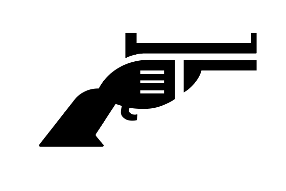 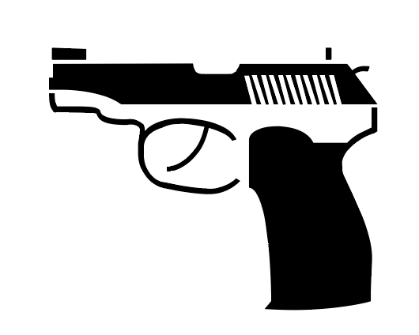 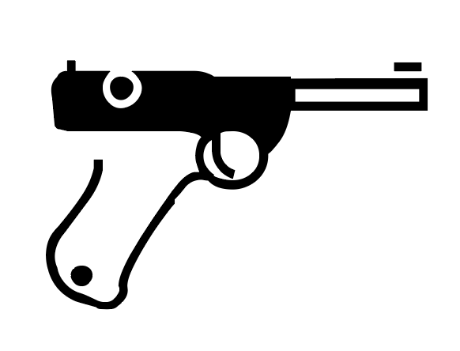 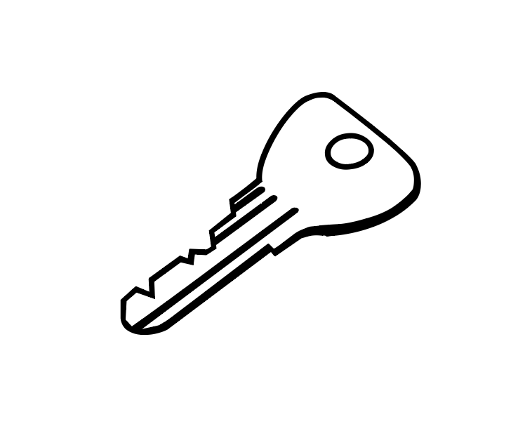-----
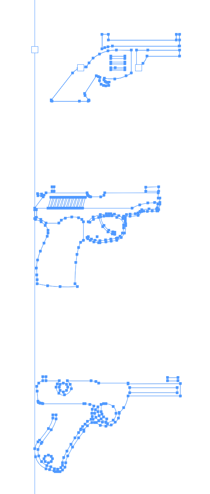 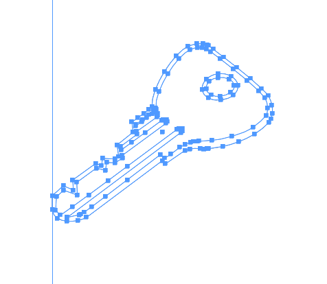2020 :
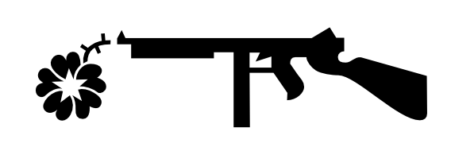 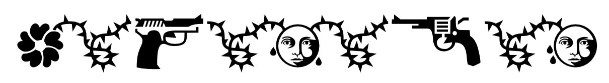 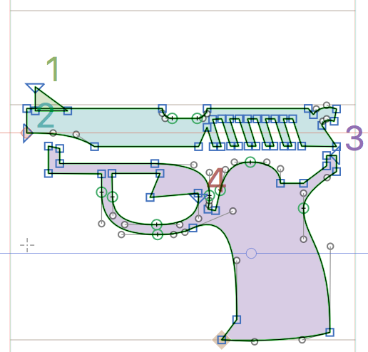 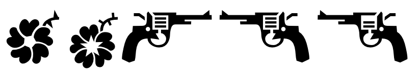
SQUAD
2017 :
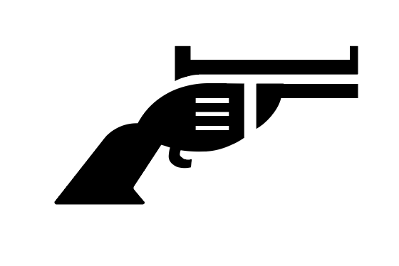 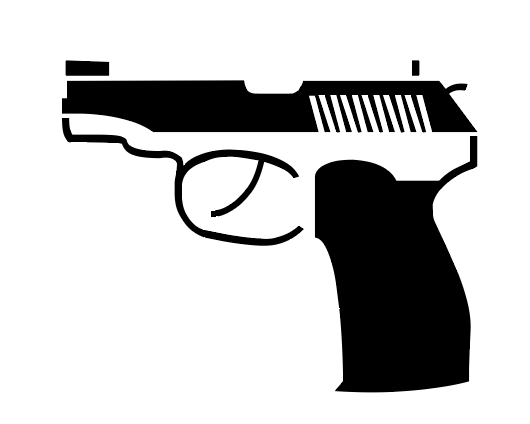 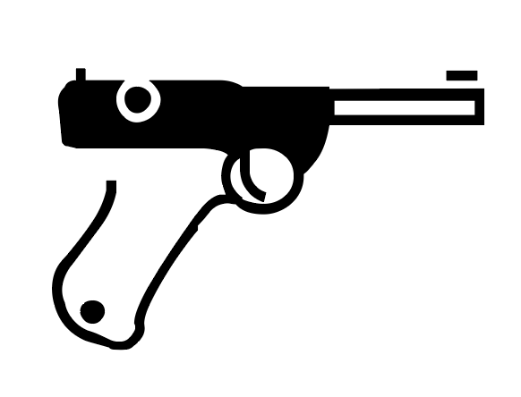 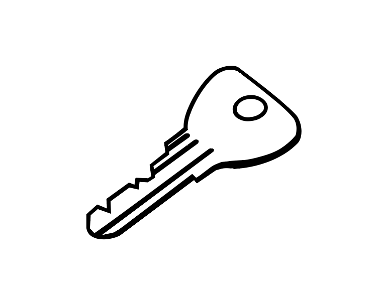-----
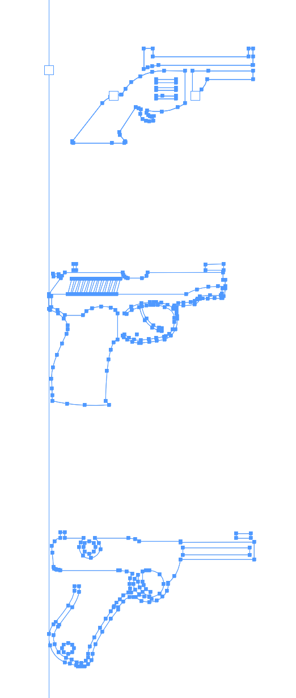 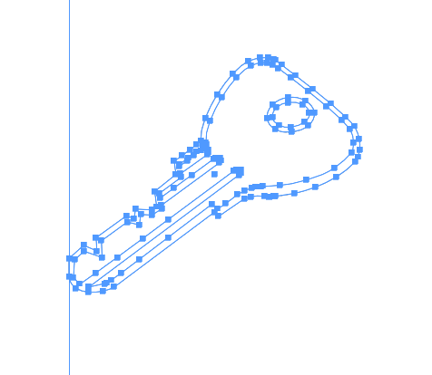2020 :
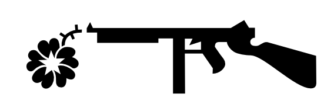 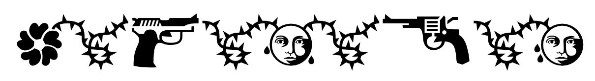 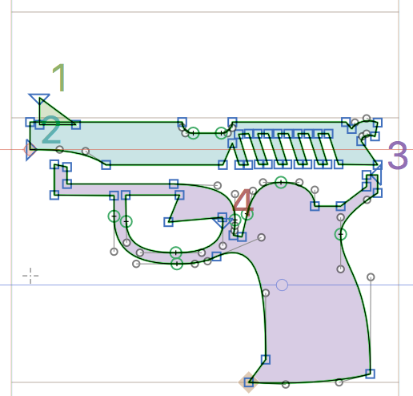 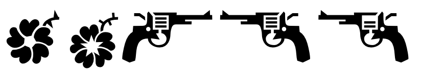
J'ai commencé à travailler en 2017, à l'occasion d'un exercice scolaire de 2e année de bachelier. Les professeurs nous avait annoncé un exercice qui consistait à réaliser des couvertures de romans policiers avec la contrainte de n'utiliser uniquement que du texte. Voulant coutourner la consigner j'ai décidé d'utiliser une police ornementale pour cette exercice, profitant de l'occasion pour poser la question de l'abstraction. Et pour l'occasion du démarrage de la série des jeux de rôle "Stories" j'ai voulu la resortir des tiroirs. Ayant vu l'état déplorable dans laquelle je l'avais laissé. J'ai donc choisi de la retraviller, la nettoyer, lui donner une seconde vie.
KARAKAS

Karakas est un exercice que je me suis donné. Je voulais faire une police variable qui varie sur l'axe de la graisse et de la chasse. Pour le style j'ai voulu faire la rencontre entre une blackletter et la littérature de science fiction.